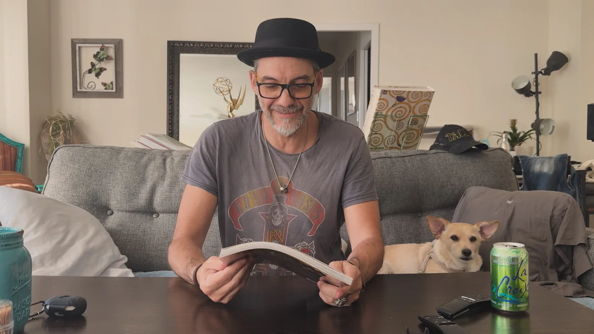

Image / film, no AI
Alessandro Taini
A recap of one artist’s lifetime work, made the traditional way. Screened at Comic-Con San Diego 2026.
- Year
- 2026
- Kind
- Image
- Role
- Filming, edit, grade
- Frames
- 9:16 reel, filmed
The subject
Two decades of images, none of them synthetic.
Alessandro Taini’s work runs from Heavenly Sword and Enslaved through DmC Devil May Cry into animation, including the Star Trek series that won him an Emmy, and the Ghostbusters series coming to Netflix. Filming an artist like this means the camera has to stay out of the way of the art.

Open the work
Primary sources.
Every artwork in the film is by Alessandro Taini and remains his, alongside the studios that commissioned it. The filming, edit, and grade are Phokus.
Structure
The games, the screen, the next thing.
The cut follows a career rather than a plot: where the images came from, where they went, and what is still ahead.
-
Reel I
Games
Heavenly Sword, Enslaved, and DmC Devil May Cry — worlds that had to be designed down to the material before anyone could play inside them.
-
Reel II
Animation
The move to the screen, including the Star Trek series that won an Emmy, where the same eye had to carry a whole production rather than a single frame.
-
Reel III
Ahead
The Ghostbusters animated series arriving on Netflix, held back to the end so the film closes forward rather than on a retrospective.
How it was made
Camera, timeline, nothing else.
This page is the one place on the site where the pipeline is the argument. The studio works generatively by choice, not by necessity, and this is the proof: the same eye, without a single model in the chain. It was cut in Premiere for two frames, a horizontal screening version and a vertical one, and shown at Comic-Con San Diego 2026.
Filmed on a camera, lit and framed on the day, with the artwork treated as the subject rather than as a texture to move over.
Assembled on a timeline and paced by hand, so the rhythm comes from the edit rather than from a template.
Colour held to the art. The grade serves work that already has its own palette, so it corrects rather than reinterprets.
Cut to picture, carrying the transitions the visuals deliberately leave unmarked.